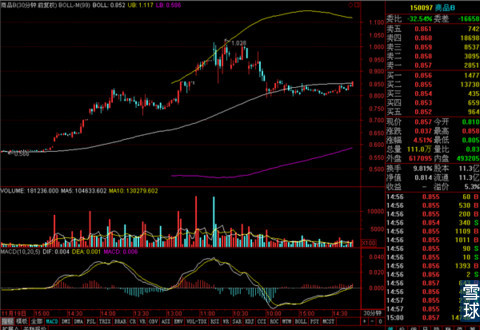
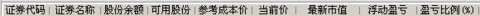
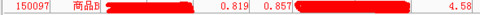
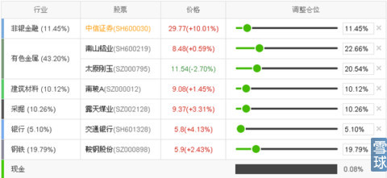
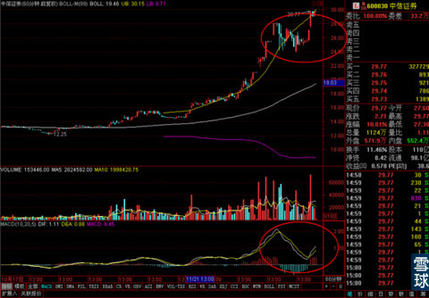

周末陪我家领导回家看望家长，昨天晚上很晚才到家，实在是很累，所以就没更新。今天状态还是有点没缓过来，所以少写一点吧，主要说说今天我的自己实盘的调仓情况。周五的时候观察到太原刚玉走势比较令人失望，所以制定了拿不回MA888减仓一半，一字板缺口封死全部清仓，之后再找机会再进的操作计划，昨天太原刚玉的走势就没能拿回MA888，但是昨天没盯盘，就是偶尔用手机看一眼，所以没减仓，今天早上开盘之后，太原刚玉没有上攻趋势，那么就照计划减了半仓出去。同时今天虽然继续下跌，但是一字板缺口还剩下一点点没封死。所以下午另外的半仓没减，继续留待观察。减掉太原刚玉空出来的现金，本来想打个短差，买入了相对重仓煤炭的商品B，等着明天冲击30分钟线中轨，如果冲不上去就马上走人。

但是结果有点出乎我的意料，今天下午整个煤炭板块提前于我的预期启动，商品B的价格直接上到30分钟线BOLL之上了。同时MACD黄白线都恰好在0轴附近，那么明天暂时不急着走了，观察一下再说。


至于上涨指数的走势，今天再次回到3000点之上，这和我们之前的判断比较接近，也就是说，在指数处于15分钟线上MA60和MA120之间形成的三角形直接，通过整理，虽然短暂跌破MA120，但是后来不仅收回，而且重新出现了多头排列的情况下，没有必要在短期过度惊恐，毕竟牛市不言顶。
但是短期调整的结束并不意味着再次挑战3100整数关口都成功，之后的观察重点将变成在指数接近3100的过程中，60分钟线上MACD走势是不是出现顶背离，如果出现短线投资者应该适度减仓，规避风险。这之前可以谨慎的追一追。
有小伙伴们很想知道我对券商股的看法，我目前的看法是这样的，在雪球的持仓组合中我之前降低了一点中信证券的仓位，躲过了券商前段时间的大幅调整，之后没有继续减仓，但是也没有加仓。

原因很简单，我的判断是证券股在经历大涨之后，不会马上出现V字反转的直接暴跌，应该是做出顶背离图形之后才有更深的调整出现，而且现在券商股的股价一直运行在BOLL上轨之外的超强势区域，即使出现顶背离，下跌的幅度可能不一定想我们想象的那么暴烈，所以还可以等等看。

以中信证券为例，只要60分钟线上MACD不出现顶背离，我暂时不会出清所以的券商股，之间进场早的小伙伴也一样，只要手里有大幅度的盈利，可以暂时不出清券商股。但是之前没有减仓，被券商股最近反弹走势吸引的，我是不建议在这个时间追着进去的。最好还是去潜伏一些有启动迹象但是没有大涨过的股票。毕竟牛市才刚刚开始，机会有的是，没必要冒那么大的风险。而且潜伏进去的话，即使最近涨幅一般，时间到了收益自然就来了。有了充足的盈利，用盈利去赌下一步的上涨，比冒险用本金的风险去赌下一步上涨要稳健的多得多。
大概就这样吧，我去休息休息。明天开始一切恢复正常。
 |
周末陪我家领导回家看望家长，昨天SaiLv 2014-12-16 16:19:59 |
Copyright © 1996-2014 SINA Corporation All Rights Reserved.